- (a)\(\displaystyle \sum_{n=1}^\infty \frac{x^n}{\sqrt[9]{n}}\)
SolutionHide solution
Ratio Test gives \(R = 1\).
At \(x = 1\): \(\sum \frac{1}{n^{1/9}}\) diverges (\(p\)-series, \(p = \frac{1}{9} \le 1\)). At \(x = -1\): \(\sum \frac{(-1)^n}{n^{1/9}}\) converges (Alternating Series Test).
Interval of convergence: \([-1, 1)\).
- (b)\(\displaystyle \sum_{n=1}^\infty \frac{(7x)^n}{n^3}\)
SolutionHide solution
\(R = \frac{1}{7}\). At both endpoints the series of absolute values is \(\sum \frac{1}{n^3}\), which converges (\(p = 3\)).
Interval of convergence: \(\left[-\frac{1}{7}, \frac{1}{7}\right]\).
- (c)\(\displaystyle \sum_{n=5}^\infty \frac{(7x)^n}{n!}\)
SolutionHide solution
Ratio Test: \(\displaystyle\lim_{n\to\infty}\frac{7|x|}{n+1} = 0 \lt 1\) for every \(x\).
\(R = \infty\); interval of convergence: \((-\infty, \infty)\).
- (d)\(\displaystyle \sum_{n=1}^\infty \frac{(x-9)^n}{n(-9)^n}\)
SolutionHide solution
Center \(9\), \(R = 9\).
At \(x = 0\): \(\sum \frac{(-9)^n}{n(-9)^n} = \sum \frac{1}{n}\) diverges. At \(x = 18\): \(\sum \frac{(-1)^n}{n}\) converges (Alternating Series Test).
Interval of convergence: \((0, 18]\).
- (e)\(\displaystyle \sum_{n=1}^\infty \frac{(n+1)!\,(x-5)^n}{7^{n-4}}\)
SolutionHide solution
Ratio Test: \(\displaystyle\frac{(n+2)|x-5|}{7} \to \infty\) unless \(x = 5\).
\(R = 0\); the series converges only at \(x = 5\).
What you should know and be able to do
- Understand what a power series is and find its radius and interval of convergence.
- Use algebra, integrals, or derivatives of a known power series to find the power series of a new function.
- Find a Taylor or Maclaurin series using the definition, and using a known Maclaurin series.
- Find a Taylor or Maclaurin polynomial.
- Graph a curve given by parametric equations; parametrize lines, ellipses, and graphs of functions.
- Given a parametric curve, find the tangent line at a point, the area under the curve, and the length of the curve.
- Convert between polar and rectangular coordinates, and plot polar curves.
Earlier material is covered in the Exam 1, Exam 2, and Exam 3 guides. The series tests are summarized in the reference panels below.
Reference: series convergence tests
| Test | Series | Conclusion |
|---|---|---|
| Divergence Test | \(\sum a_n\) | If \(\lim_{n\to\infty} a_n \neq 0\) (or does not exist), the series diverges. If the limit is \(0\), the test says nothing. |
| Geometric series | \(\displaystyle\sum_{n=1}^\infty ar^{n-1}\) | Converges if \(|r| \lt 1\), with sum \(\dfrac{a}{1-r}\); diverges if \(|r| \ge 1\). |
| \(p\)-series | \(\displaystyle\sum_{n=1}^\infty \frac{1}{n^p}\) | Converges if \(p \gt 1\); diverges if \(p \le 1\). |
| Integral Test | \(a_n = f(n)\), \(f\) continuous, positive, decreasing | \(\sum a_n\) and \(\int_1^\infty f(x)\,dx\) both converge or both diverge. |
| Comparison | \(0 \le a_n \le b_n\) | If \(\sum b_n\) converges, so does \(\sum a_n\). If \(\sum a_n\) diverges, so does \(\sum b_n\). |
| Limit Comparison | \(a_n, b_n \gt 0\), \(\lim\limits_{n\to\infty}\dfrac{a_n}{b_n} = L\) | If \(0 \lt L \lt \infty\), both series converge or both diverge. |
| Alternating Series Test | \(\sum (-1)^n b_n\), \(b_n \gt 0\) | If \(b_n\) is decreasing and \(\lim b_n = 0\), the series converges. |
| Absolute convergence | \(\sum a_n\) | If \(\sum |a_n|\) converges, then \(\sum a_n\) converges (absolutely). Convergent but not absolutely convergent means conditionally convergent. |
| Ratio Test | \(\lim\limits_{n\to\infty}\left|\dfrac{a_{n+1}}{a_n}\right| = L\) | \(L \lt 1\): converges absolutely. \(L \gt 1\): diverges. \(L = 1\): inconclusive. |
| Root Test | \(\lim\limits_{n\to\infty}\sqrt[n]{|a_n|} = L\) | \(L \lt 1\): converges absolutely. \(L \gt 1\): diverges. \(L = 1\): inconclusive. |
Reference: Taylor series and known Maclaurin series
Taylor series of \(f\) centered at \(x = a\): \(\displaystyle T(x) = \sum_{n=0}^\infty \frac{f^{(n)}(a)}{n!}(x-a)^n\). The Maclaurin series is the case \(a = 0\).
| Function | Maclaurin series | Interval of convergence |
|---|---|---|
| \(\dfrac{1}{1-x}\) | \(\displaystyle\sum_{n=0}^\infty x^n = 1 + x + x^2 + \cdots\) | \((-1, 1)\) |
| \(e^x\) | \(\displaystyle\sum_{n=0}^\infty \frac{x^n}{n!} = 1 + x + \frac{x^2}{2!} + \cdots\) | \((-\infty, \infty)\) |
| \(\sin x\) | \(\displaystyle\sum_{n=0}^\infty (-1)^n\frac{x^{2n+1}}{(2n+1)!} = x - \frac{x^3}{3!} + \cdots\) | \((-\infty, \infty)\) |
| \(\cos x\) | \(\displaystyle\sum_{n=0}^\infty (-1)^n\frac{x^{2n}}{(2n)!} = 1 - \frac{x^2}{2!} + \cdots\) | \((-\infty, \infty)\) |
| \(\tan^{-1} x\) | \(\displaystyle\sum_{n=0}^\infty (-1)^n\frac{x^{2n+1}}{2n+1} = x - \frac{x^3}{3} + \cdots\) | \([-1, 1]\) |
| \(\ln(1+x)\) | \(\displaystyle\sum_{n=1}^\infty (-1)^{n-1}\frac{x^n}{n} = x - \frac{x^2}{2} + \cdots\) | \((-1, 1]\) |
Lagrange remainder: if \(|f^{(n+1)}(x)| \le M\) between \(a\) and \(x\), then \(\displaystyle |f(x) - T_n(x)| \le \frac{M\,|x-a|^{n+1}}{(n+1)!}\).
Radius and interval of convergence
- (a)\(\displaystyle \sum_{n=1}^{\infty}\frac{(3x-1)^n}{3^n}\)
SolutionHide solution
Geometric with ratio \(\frac{3x-1}{3}\): converges when \(|3x - 1| \lt 3\), i.e. \(-\frac{2}{3} \lt x \lt \frac{4}{3}\) (center \(\frac{1}{3}\), \(R = 1\)).
At both endpoints the terms are \((\pm 1)^n\), which do not approach 0, so both diverge.
Interval of convergence: \(\left(-\frac{2}{3}, \frac{4}{3}\right)\).
- (b)\(\displaystyle \sum_{n=1}^{\infty}\frac{(3x-1)^n}{n\,3^n}\)
SolutionHide solution
\(R = 1\) (center \(\frac{1}{3}\)). At \(x = -\frac{2}{3}\): \(\sum \frac{(-1)^n}{n}\) converges (AST). At \(x = \frac{4}{3}\): \(\sum \frac{1}{n}\) diverges.
Interval of convergence: \(\left[-\frac{2}{3}, \frac{4}{3}\right)\).
- (c)\(\displaystyle \sum_{n=1}^{\infty}(-1)^n\frac{(3x-1)^n}{n\,3^n}\)
SolutionHide solution
\(R = 1\) (center \(\frac{1}{3}\)). At \(x = -\frac{2}{3}\): \(\sum \frac{1}{n}\) diverges. At \(x = \frac{4}{3}\): \(\sum \frac{(-1)^n}{n}\) converges (AST).
Interval of convergence: \(\left(-\frac{2}{3}, \frac{4}{3}\right]\).
Power series representations
SolutionHide solution
- (a)Represent \(\displaystyle f(x) = \frac{6}{2 + 9x^2}\) as a power series.
SolutionHide solution
\(\frac{6}{2 + 9x^2} = \frac{3}{1 - \left(-\frac{9}{2}x^2\right)}\).
\[f(x) = \sum_{n=0}^{\infty}\frac{3(-9)^n}{2^n}\,x^{2n} = 3 - \frac{27}{2}x^2 + \frac{243}{4}x^4 - \frac{2187}{8}x^6 + \cdots\] - (b)What is the interval of convergence for the series from part (a)?
SolutionHide solution
\(\frac{9}{2}x^2 \lt 1\), so \(\left(-\dfrac{\sqrt{2}}{3}, \dfrac{\sqrt{2}}{3}\right)\).
- (c)List the first three coefficients \(a_0\), \(a_1\), and \(a_2\) of the series from part (a).
SolutionHide solution
\(a_0 = 3, \quad a_1 = 0, \quad a_2 = -\frac{27}{2}\).
- (d)Use the series from part (a) to find the power series for \(\displaystyle f(x) = \frac{6x^5}{2 + 9x^2}\).
SolutionHide solution
\[f(x) = \sum_{n=0}^{\infty}\frac{3(-9)^n}{2^n}\,x^{2n+5} = 3x^5 - \frac{27}{2}x^7 + \frac{243}{4}x^9 - \cdots\] - (e)Use the series from part (a) to find the power series for \(\displaystyle f(x) = \frac{6}{x^5(2 + 9x^2)}\).
SolutionHide solution
\[f(x) = \sum_{n=0}^{\infty}\frac{3(-9)^n}{2^n}\,x^{2n-5} = \frac{3}{x^5} - \frac{27}{2x^3} + \frac{243}{4x} - \frac{2187}{8}x + \cdots\]
SolutionHide solution
\(f'(x) = \frac{-9}{1 - 9x} = -\sum_{n=0}^\infty 9^{n+1}x^n\). Integrate and use \(f(0) = 0\):
\[\ln(1 - 9x) = -\sum_{n=1}^{\infty}\frac{9^n x^n}{n}, \qquad |x| \lt \tfrac{1}{9}\]SolutionHide solution
\(\int f\,dx = -\frac{1}{1 + x} + C\), and \(\frac{1}{(1+x)^2} = -\frac{d}{dx}\left(\frac{1}{1+x}\right) = -\frac{d}{dx}\sum (-1)^n x^n\).
\[f(x) = \sum_{n=0}^{\infty}(-1)^n(n + 1)\,x^n\]- (a)\(\displaystyle \frac{1}{1 + x^2}\)
SolutionHide solution
\[\sum_{n=0}^{\infty}(-1)^n x^{2n}\] - (b)\(\displaystyle \frac{x^7}{1 + x^2}\)
SolutionHide solution
\[\sum_{n=0}^{\infty}(-1)^n x^{2n+7}\] - (c)\(\displaystyle \frac{1}{x^7(1 + x^2)}\)
SolutionHide solution
\[\sum_{n=0}^{\infty}(-1)^n x^{2n-7}\] - (d)\(\displaystyle \frac{1}{(1 - x)^2}\)
SolutionHide solution
\[\sum_{n=0}^{\infty}(n + 1)x^n\] - (e)\(\displaystyle \ln(3 + x)\)
SolutionHide solution
\(\ln(3 + x) = \ln 3 + \ln\left(1 + \frac{x}{3}\right)\).
\[\ln 3 + \sum_{n=1}^{\infty}\frac{(-1)^{n-1}}{n}\left(\frac{x}{3}\right)^n\] - (f)\(\displaystyle x^5\ln(3 + x)\)
SolutionHide solution
\[x^5\ln 3 + \sum_{n=1}^{\infty}\frac{(-1)^{n-1}}{n}\cdot\frac{x^{n+5}}{3^n}\]
Maclaurin and Taylor series
- (a)Use a known Maclaurin series to find the Maclaurin series for \(f\).
SolutionHide solution
\[f(x) = \sum_{n=0}^{\infty}(-2)^n x^{n+1}\] - (b)Find the Maclaurin series for \(\displaystyle\int f(x)\,dx\).
SolutionHide solution
\[C + \sum_{n=0}^{\infty}(-2)^n\frac{x^{n+2}}{n + 2}\] - (c)Find the Maclaurin series for \(f'(x)\).
SolutionHide solution
\[\sum_{n=0}^{\infty}(-2)^n(n + 1)x^n\] - (d)Find the Maclaurin polynomial of degree 4 for \(f\).
SolutionHide solution
\[T_4(x) = x - 2x^2 + 4x^3 - 8x^4\] - (e)Using the Maclaurin series for \(f\), find \(\displaystyle\lim_{x\to 0}\frac{f(x) - x}{x^2}\).
SolutionHide solution
\[\frac{f(x) - x}{x^2} = \frac{-2x^2 + 4x^3 - 8x^4 + \cdots}{x^2} = -2 + 4x - 8x^2 + \cdots \;\longrightarrow\; -2\]
- (a)Use a known Maclaurin series to find the Maclaurin series for \(f\).
SolutionHide solution
\[\sum_{n=0}^{\infty}(-1)^n\frac{x^{2n+2}}{(2n + 1)!}\] - (b)Find the Maclaurin series for \(\displaystyle\int f(x)\,dx\).
SolutionHide solution
\[C + \sum_{n=0}^{\infty}(-1)^n\frac{x^{2n+3}}{(2n + 3)(2n + 1)!}\] - (c)Find the Maclaurin series for \(f'(x)\).
SolutionHide solution
\[\sum_{n=0}^{\infty}(-1)^n\frac{2n + 2}{(2n + 1)!}\,x^{2n+1}\] - (d)Find the Maclaurin polynomial of degree 6 for \(f\).
SolutionHide solution
\[T_6(x) = x^2 - \frac{x^4}{3!} + \frac{x^6}{5!}\] - (e)Using the Maclaurin series for \(f\), find \(\displaystyle\lim_{x\to 0}\frac{f(x) - x^2}{x^4}\).
SolutionHide solution
\[\frac{f(x) - x^2}{x^4} = -\frac{1}{3!} + \frac{x^2}{5!} - \cdots \;\longrightarrow\; -\frac{1}{6}\]
- (a)\(\displaystyle\cosh x = \frac{e^x + e^{-x}}{2}\) (Hint: write out some terms.)
SolutionHide solution
The odd powers cancel and the even powers double:
\[\cosh x = \sum_{n=0}^{\infty}\frac{x^{2n}}{(2n)!}\] - (b)\(\displaystyle \int\cos(x^2)\,dx\)
SolutionHide solution
\[C + \sum_{n=0}^{\infty}(-1)^n\frac{x^{4n+1}}{(4n + 1)(2n)!}\]
SolutionHide solution
- (a)Find the degree 10 Maclaurin polynomial for \(f(t)\). Use a known series, not derivatives. Reduce all fractions.
SolutionHide solution
\[T_{10}(t) = 3t^2 - \frac{9}{2}t^6 + \frac{81}{40}t^{10}\] - (b)Find the Maclaurin series for \(\displaystyle\int_0^x \sin(3t^2)\,dt\).
SolutionHide solution
\[\sum_{n=0}^{\infty}(-1)^n\frac{3^{2n+1}\,x^{4n+3}}{(4n + 3)(2n + 1)!}\] - (c)Use part (b) to find the degree 11 Maclaurin polynomial for \(\displaystyle\int_0^x \sin(3t^2)\,dt\).
SolutionHide solution
\[T_{11}(x) = x^3 - \frac{9}{14}x^7 + \frac{81}{440}x^{11}\] - (d)Use part (c) to estimate \(\displaystyle\int_0^{0.6}\sin(3t^2)\,dt\). (Use a calculator for this part only.)
SolutionHide solution
\[T_{11}(0.6) = (0.6)^3 - \frac{9}{14}(0.6)^7 + \frac{81}{440}(0.6)^{11} \approx 0.19867\]
SolutionHide solution
Substitute \(\cos x = 1 - \frac{x^2}{2} + \frac{x^4}{24} - \cdots\):
\[\frac{\frac{x^4}{24} - \frac{x^6}{720} + \cdots}{8x^4} = \frac{1}{192} - \frac{x^2}{5760} + \cdots \;\longrightarrow\; \frac{1}{192}\]SolutionHide solution
SolutionHide solution
Center \(1\), \(R = 2\). At \(x = -1\): \(\sum \frac{(-1)^n}{n}\) converges (AST). At \(x = 3\): \(\sum \frac{1}{n}\) diverges.
Interval of convergence: \([-1, 3)\).
More Taylor series and the remainder
- (a)\(f(x) = \ln(\sec x)\) at \(c = 0\) (Maclaurin series).
SolutionHide solution
\[T_4(x) = \frac{x^2}{2} + \frac{x^4}{12}\] - (b)\(f(x) = x^3\) at \(c = -1\).
SolutionHide solution
\[T_4(x) = -1 + 3(x + 1) - 3(x + 1)^2 + (x + 1)^3\] - (c)\(f(x) = \ln x\) at \(c = 2\).
SolutionHide solution
\[T_4(x) = \ln 2 + \frac{x - 2}{2} - \frac{(x - 2)^2}{8} + \frac{(x - 2)^3}{24} - \frac{(x - 2)^4}{64}\] - (d)\(f(x) = \sin x\) at \(c = \dfrac{\pi}{2}\).
SolutionHide solution
\[T_4(x) = 1 - \frac{1}{2}\left(x - \frac{\pi}{2}\right)^2 + \frac{1}{24}\left(x - \frac{\pi}{2}\right)^4\]
SolutionHide solution
SolutionHide solution
Set \(x = 1\): \(\tan^{-1}1 = \frac{\pi}{4} = \sum (-1)^n\frac{1}{2n + 1}\). Multiply by 4:
\[\sum_{n=0}^{\infty}(-1)^n\frac{4}{2n + 1} = \pi\]- (a)\(\displaystyle \sum_{n=1}^{\infty}(-1)^{n-1}\frac{3^n}{n\,5^n}\)
SolutionHide solution
This is \(\ln(1 + x) = \sum (-1)^{n-1}\frac{x^n}{n}\) with \(x = \frac{3}{5}\):
\[\ln\frac{8}{5}\] - (b)\(\displaystyle \sum_{n=0}^{\infty}\frac{(-1)^n\pi^{2n+1}}{4^{2n+1}(2n + 1)!}\)
SolutionHide solution
This is the series for \(\sin x\) with \(x = \frac{\pi}{4}\):
\[\sin\frac{\pi}{4} = \frac{\sqrt{2}}{2}\]
SolutionHide solution
\(\sin(x^3) = x^3 - \frac{x^9}{3!} + \frac{x^{15}}{5!} - \cdots\). The coefficient of \(x^{15}\) is \(\frac{f^{(15)}(0)}{15!} = \frac{1}{5!}\), so
\[f^{(15)}(0) = \frac{15!}{5!}\]- (a)Use the definition to find the degree 4 Taylor polynomial for \(f(x) = e^{3x^2}\) centered at \(c = 2\).
SolutionHide solution
\[T_4(x) = e^{12}\left[1 + 12(x - 2) + 75(x - 2)^2 + 324(x - 2)^3 + \frac{2169}{2}(x - 2)^4\right]\] - (b)Use a known series to find the Maclaurin series for \(f(x) = e^{3x^2}\).
SolutionHide solution
\[f(x) = \sum_{n=0}^{\infty}\frac{3^n x^{2n}}{n!}\] - (c)Find the degree 4 Maclaurin polynomial for \(f(x) = e^{3x^2}\).
SolutionHide solution
\[T_4(x) = 1 + 3x^2 + \frac{9}{2}x^4\] - (d)Why did we have to use the definition for part (a) but not for (b) and (c)? Generalize: for what sorts of functions can you use known series, and when do you have to use the definition to find Taylor polynomials?
SolutionHide solution
The known series are all centered at \(0\). Substituting \(3x^2\) into the series for \(e^u\) gives a series in powers of \(x\), which is exactly a Maclaurin series.
For a series centered at \(c = 2\) we need powers of \((x - 2)\), and substituting into a Maclaurin series does not produce them, so we compute derivatives. In general: known series work when the function is built from known series (by substitution, multiplication by powers of \(x\), differentiation, or integration) and the center matches; otherwise use the definition \(\frac{f^{(n)}(c)}{n!}\).
- (a)Find the degree 2 Taylor polynomial for \(f(x) = (3x + 6)^{5/3}\) centered at \(c = 7\).
SolutionHide solution
\[T_2(x) = 243 + 45(x - 7) + \frac{5}{3}(x - 7)^2\] - (b)Use part (a) to estimate the value of \((27.3)^{5/3} = (3(7.1) + 6)^{5/3}\). Use a calculator and give your answer in decimal form.
SolutionHide solution
\[(27.3)^{5/3} \approx T_2(7.1) = 243 + 4.5 + \frac{5}{3}(0.01) \approx 247.517\]
SolutionHide solution
- (a)For \(f(x) = \sqrt{x}\), approximate \(f(4.2)\) by a degree 2 Taylor polynomial centered at 4.
SolutionHide solution
\[T_2(x) = 2 + \frac{x - 4}{4} - \frac{(x - 4)^2}{64}, \qquad f(4.2) \approx T_2(4.2) = 2.049375\] - (b)Use the Lagrange Remainder Formula to determine the maximum possible error in part (a).
SolutionHide solution
\(f'''(x) = \frac{3}{8}x^{-5/2}\) is largest on \([4, 4.2]\) at \(x = 4\): \(M = \frac{3}{256}\).
\[|R_2| \le \frac{3}{256}\cdot\frac{(0.2)^3}{3!} \approx 0.0000156\]
- (a)For \(f(x) = x^{2/3}\), approximate \(f(1.2)\) by a degree 3 Taylor polynomial centered at 1.
SolutionHide solution
\[T_3(x) = 1 + \frac{2}{3}(x - 1) - \frac{1}{9}(x - 1)^2 + \frac{4}{81}(x - 1)^3, \qquad f(1.2) \approx 1.12928\] - (b)Use the Lagrange Remainder Formula to determine the maximum possible error in part (a).
SolutionHide solution
\(|f^{(4)}(x)| = \frac{56}{81}x^{-10/3}\) is largest on \([1, 1.2]\) at \(x = 1\): \(M = \frac{56}{81}\).
\[|R_3| \le \frac{56}{81}\cdot\frac{(0.2)^4}{4!} \approx 0.0000461\]
- (a)For \(f(x) = x\sin x\), approximate \(f(1)\) by a degree 4 Taylor polynomial centered at 0.
SolutionHide solution
\[T_4(x) = x^2 - \frac{x^4}{6}, \qquad f(1) \approx \frac{5}{6}\] - (b)Use the Lagrange Remainder Formula to determine the maximum possible error in part (a).
SolutionHide solution
\(f^{(5)}(x) = x\cos x + 5\sin x\), and \(|f^{(5)}(x)| \le \cos 1 + 5\sin 1 \approx 4.748\) on \([0, 1]\).
\[|R_4| \le \frac{4.748\cdot 1^5}{5!} \approx 0.0396\]
Parametric equations
- (a)\(x = 3 - 4t, \quad y = 2 - 3t\)
SolutionHide solution
\(t = \frac{3 - x}{4}\), so
\[y = \frac{3x - 1}{4} \quad\text{(a line)}\] - (b)\(x = 1 - t^2, \quad y = t - 2, \quad -2 \le t \le 4\)
SolutionHide solution
\(t = y + 2\), so
\[x = -y^2 - 4y - 3, \quad -4 \le y \le 2 \quad\text{(part of a parabola opening left)}\] - (c)\(x = t^2, \quad y = t^3\)
SolutionHide solution
\[y^2 = x^3, \text{ i.e. } y = \pm x^{3/2} \quad\text{(a semicubical parabola with a cusp at the origin)}\] - (d)\(x = \sin t, \quad y = \csc t, \quad 0 \lt t \le \pi/2\)
SolutionHide solution
\[y = \frac{1}{x}, \quad 0 \lt x \le 1 \quad\text{(part of a hyperbola)}\]
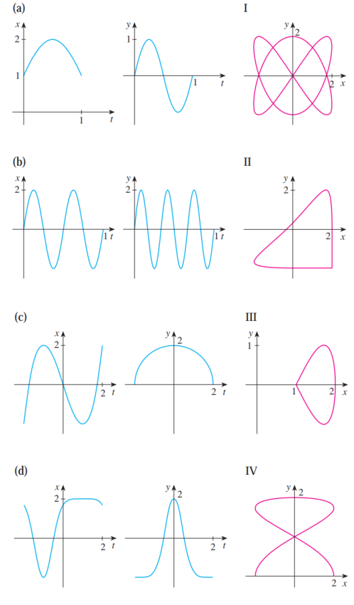
SolutionHide solution
(a) → III, (b) → I, (c) → IV, (d) → II
SolutionHide solution
Many answers are possible. One is
\[x = 6 - 10t, \quad y = 1 - 10t, \quad 0 \le t \le 1\]- (a)Once around clockwise, starting at \((2, 1)\).
SolutionHide solution
\[x = 2\cos t, \quad y = 1 - 2\sin t, \quad 0 \le t \le 2\pi\] - (b)Three times around counterclockwise, starting at \((2, 1)\).
SolutionHide solution
\[x = 2\cos t, \quad y = 1 + 2\sin t, \quad 0 \le t \le 6\pi\] - (c)Halfway around counterclockwise, starting at \((0, 3)\).
SolutionHide solution
\[x = 2\cos t, \quad y = 1 + 2\sin t, \quad \frac{\pi}{2} \le t \le \frac{3\pi}{2}\]
- (a)\(x = 1 + 4t - t^2, \quad y = 2 - t^3; \quad t = 1\)
SolutionHide solution
\(\displaystyle\frac{dy}{dx} = \frac{-3t^2}{4 - 2t}\bigg|_{t=1} = -\frac{3}{2}\); the point is \((4, 1)\).
\[y = -\frac{3}{2}x + 7\] - (b)\(x = t - t^{-1}, \quad y = 1 + t^2; \quad t = 1\)
SolutionHide solution
\(\displaystyle\frac{dy}{dx} = \frac{2t}{1 + t^{-2}}\bigg|_{t=1} = 1\); the point is \((0, 2)\).
\[y = x + 2\] - (c)\(x = t\cos t, \quad y = t\sin t; \quad t = \pi\)
SolutionHide solution
\(\displaystyle\frac{dy}{dx} = \frac{\sin t + t\cos t}{\cos t - t\sin t}\bigg|_{t=\pi} = \frac{-\pi}{-1} = \pi\); the point is \((-\pi, 0)\).
\[y = \pi(x + \pi) = \pi x + \pi^2\] - (d)\(x = 1 + \sqrt{t}, \quad y = t^2 + 2; \quad (2, 3)\)
SolutionHide solution
The point \((2, 3)\) corresponds to \(t = 1\). \(\displaystyle\frac{dy}{dx} = \frac{2t}{1/(2\sqrt{t})} = 4t^{3/2}\Big|_{t=1} = 4\).
\[y = 4x - 5\]
- (a)\(x = t^3 - 3t, \quad y = t^2 - 3\)
SolutionHide solution
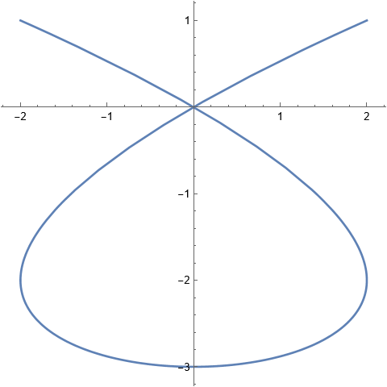
- (b)\(x = t^3 - 3t, \quad y = t^3 - 3t^2\)
SolutionHide solution
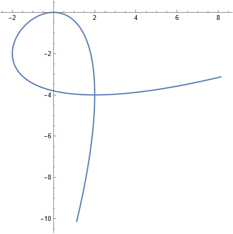
- (c)\(x = \cos\theta, \quad y = \cos 3\theta\)
SolutionHide solution
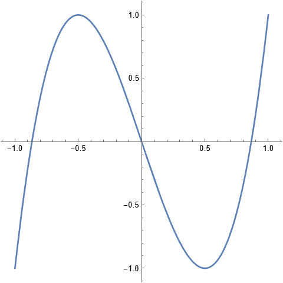
- (d)\(x = \cos t, \quad y = \sin t\cos t\)
SolutionHide solution
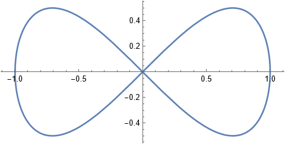
SolutionHide solution
The curve meets the \(y\)-axis (\(x = 0\)) at \(t = 0\) and \(t = 2\).
\[A = \left|\int_0^2 x\,\frac{dy}{dt}\,dt\right| = \left|\int_0^2 \left(t^2 - 2t\right)\frac{1}{2\sqrt{t}}\,dt\right| = \frac{8\sqrt{2}}{15}\]SolutionHide solution
The curve meets the \(x\)-axis at \(t = 0\) and \(t = 1\), and \(y \ge 0\) between them.
\[A = \int_0^1 y\,\frac{dx}{dt}\,dt = \int_0^1\left(t - t^2\right)e^t\,dt = 3 - e\]- (a)\(x = e^t + e^{-t}, \quad y = 5 - 2t, \quad 0 \le t \le 3\)
SolutionHide solution
\(\left(\frac{dx}{dt}\right)^2 + \left(\frac{dy}{dt}\right)^2 = (e^t - e^{-t})^2 + 4 = (e^t + e^{-t})^2\).
\[L = \int_0^3\left(e^t + e^{-t}\right)dt = e^3 - e^{-3}\] - (b)\(x = t\sin t, \quad y = t\cos t, \quad 0 \le t \le 1\)
SolutionHide solution
\(\left(\frac{dx}{dt}\right)^2 + \left(\frac{dy}{dt}\right)^2 = (\sin t + t\cos t)^2 + (\cos t - t\sin t)^2 = 1 + t^2\).
\[L = \int_0^1\sqrt{1 + t^2}\,dt = \frac{\sqrt{2}}{2} + \frac{1}{2}\ln\!\left(1 + \sqrt{2}\right)\]
Polar coordinates
- (a)\((1, \pi)\)
SolutionHide solution
\((-1, 0)\)
- (b)\(\left(2, -\frac{2\pi}{3}\right)\)
SolutionHide solution
\(\left(-1, -\sqrt{3}\right)\)
- (c)\(\left(-\sqrt{21}, \frac{5\pi}{4}\right)\)
SolutionHide solution
\(x = -\sqrt{21}\cos\frac{5\pi}{4} = \frac{\sqrt{42}}{2}\), \(y = -\sqrt{21}\sin\frac{5\pi}{4} = \frac{\sqrt{42}}{2}\), so \(\left(\frac{\sqrt{42}}{2}, \frac{\sqrt{42}}{2}\right) \approx (3.24, 3.24)\).
Plot of all three pointsHide plot of all three points
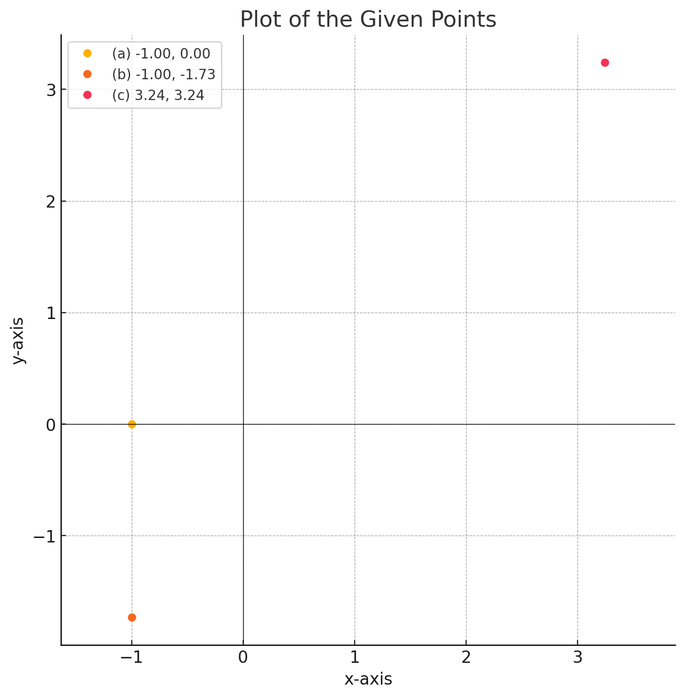
- (a)\((2, -2)\)
SolutionHide solution
\(\left(2\sqrt{2}, \frac{7\pi}{4}\right)\)
- (b)\((-1, \sqrt{3})\)
SolutionHide solution
\(\left(2, \frac{2\pi}{3}\right)\)
- (c)\((3\sqrt{3}, 3)\)
SolutionHide solution
\(\left(6, \frac{\pi}{6}\right)\)
- (a)\(r \gt 1\)
SolutionHide solution
Everything outside the unit circle.
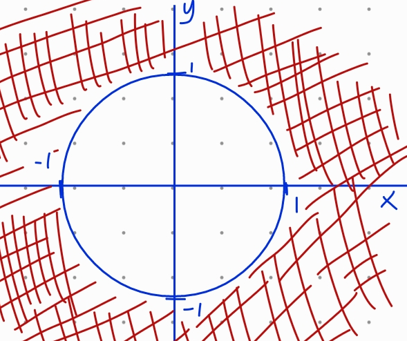
- (b)\(2 \lt r \lt 3, \quad \frac{5\pi}{3} \le \theta \le \frac{7\pi}{3}\)
SolutionHide solution
Part of the ring between the circles of radius 2 and 3, from \(\theta = -\frac{\pi}{3}\) to \(\theta = \frac{\pi}{3}\).
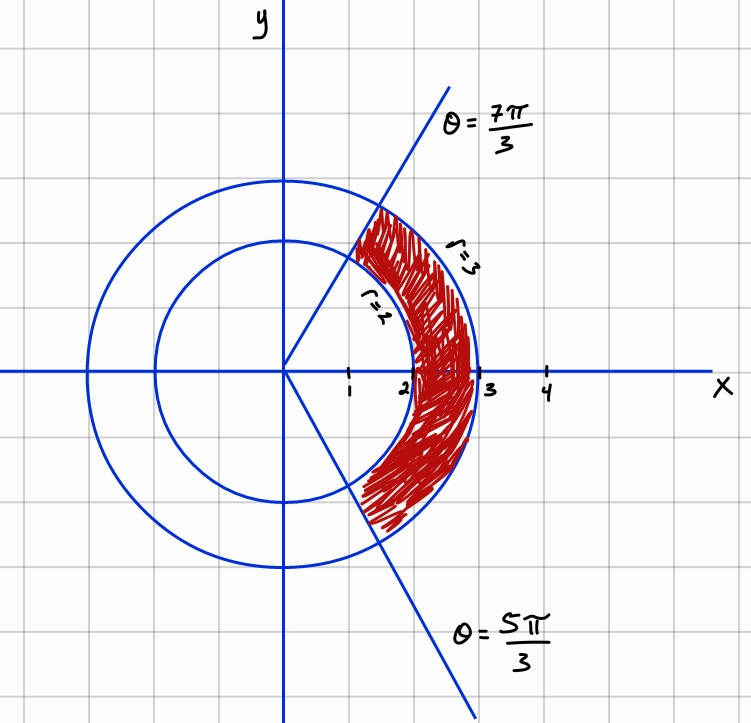
SolutionHide solution
By the Law of Cosines (the angle between the rays is \(\frac{\pi}{3}\)): \(d^2 = 2^2 + 4^2 - 2(2)(4)\cos\frac{\pi}{3} = 12\).
\[d = 2\sqrt{3}\]- (a)\(y = 2\)
SolutionHide solution
\[r\sin\theta = 2 \;\Longrightarrow\; r = 2\csc\theta\] - (b)\(y = 1 + 3x\)
SolutionHide solution
\[r\sin\theta = 1 + 3r\cos\theta \;\Longrightarrow\; r = \frac{1}{\sin\theta - 3\cos\theta}\] - (c)\(xy = 4\)
SolutionHide solution
\[r^2\sin\theta\cos\theta = 4 \;\Longrightarrow\; r^2 = \frac{8}{\sin 2\theta} = 8\csc 2\theta\]
- (a)\(r^2 = 5\)
SolutionHide solution
\[x^2 + y^2 = 5 \quad\text{(circle of radius } \sqrt{5}\text{)}\] - (b)\(r = 2\cos\theta\)
SolutionHide solution
Multiply by \(r\): \(r^2 = 2r\cos\theta\).
\[x^2 + y^2 = 2x, \text{ i.e. } (x - 1)^2 + y^2 = 1\] - (c)\(r^2\cos 2\theta = 1\)
SolutionHide solution
\(r^2(\cos^2\theta - \sin^2\theta) = 1\).
\[x^2 - y^2 = 1 \quad\text{(a hyperbola)}\] - (d)\(\theta = \frac{\pi}{3}\)
SolutionHide solution
\[y = \sqrt{3}\,x \quad\text{(a line through the origin)}\]
- (a)\(r = 2\sin\theta\)
SolutionHide solution
A circle of radius 1 centered at \((0, 1)\): \(x^2 + (y - 1)^2 = 1\). It is traced once for \(0 \le \theta \le \pi\).
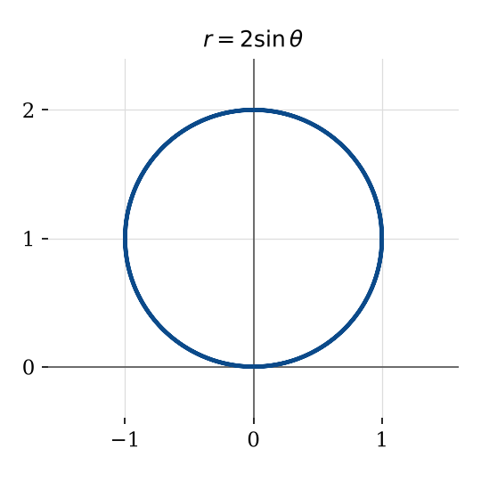
- (b)\(r = 1 + \cos\theta\)
SolutionHide solution
A cardioid: \(r = 2\) at \(\theta = 0\), \(r = 1\) at \(\theta = \pm\frac{\pi}{2}\), and \(r = 0\) at \(\theta = \pi\) (the cusp at the origin).
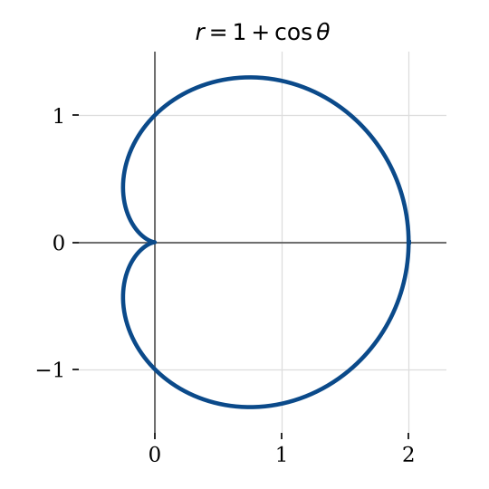
- (c)\(r = \cos 2\theta\)
SolutionHide solution
A four-leaved rose. The leaves are centered on the axes, and \(r = 0\) at \(\theta = \frac{\pi}{4}, \frac{3\pi}{4}, \ldots\)
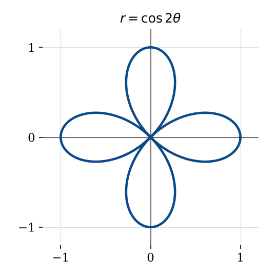